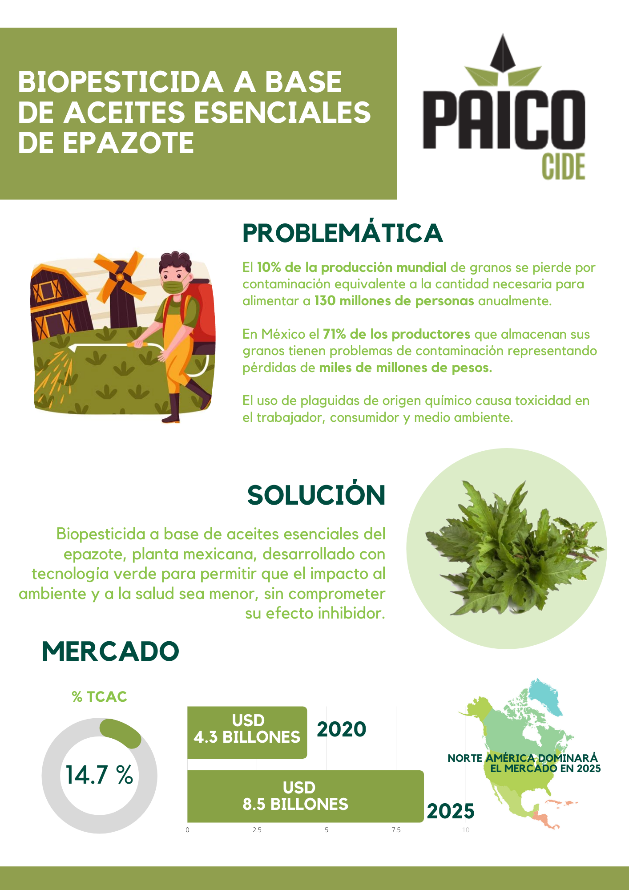

PRODUCTOS O SERVICIOS PARA EMPRENDIMIENTO DE BASE TECNOLOGICA
PAICOcide: Biopesticida a base de aceites esenciales de epazote

Paico-cide es un biopesticida a base de ascaridol, carvacrol, y cariofileno de epazote que ayuda a controlar la contaminación de almacenes de maíz al menos en un 60%, reducir la pérdida económica por producto y aumentar la calidad de vida de los trabajadores evitando la toxicidad ambiental y ocupacional a diferencia de los pesticidas químicos comúnmente usados que son altamente tóxicos.
